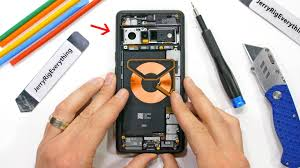

Op deze pagina gaan we het hebben over de fysieke laag van de telefoon. De fysieke laag gaat over alle hardware componenten in je telefoon.
De fysieke laag zorgt ervoor dat de verbindingen en de communicatie goed werkt. De fysieke laag zorgt ervoor dat alle signalen worden verstuurd, ontvangen en worden omgezet in bruikbare info.
De fysieke laag bestaat uit een aantal elementen: de antenne (ontvangt en verstuurd signalen), radiofrequentie-onderdelen (verbind je telefoon met een netwerk zoals 4 of 5g), hij zorgt voor bluetooth of wifi, hij regelt het batterijbeheer en stroombeheer,
en tot slot regelt hij het scherm, microfoon en luidsprekerbeheer. Naast al dit bevat de fysieke laag ook ROM en RAM (lees daar straks meer over), randapparatuur en de processor. ROM (read only memory), wordt gerbuikt om slechts gegevens leest, en dat opslaat. In tegenstelling tot RAM (dat gegevens niet vasthoudt bij uitschakeling) houdt de ROM wel gegevens vast tijdens het uitschakelen. ROM houdt cruciale info vast die vereist in voor het opstarten van je device.
Als allerlaatst bevat de logische laag ook randapparatuur, dit is apparatuur die je kunt verbinden met je apparaat, denk aan een muis, een toetsenbord, of bijvoorbeeld je airpods of je muziekbox. Je kan ze aansluiten via USB, bluetooth, HDMI of andere verbindingen. Randapparatuur maakt verschillende taken uitvoeren gemakkelijker voor de gebruiker.
